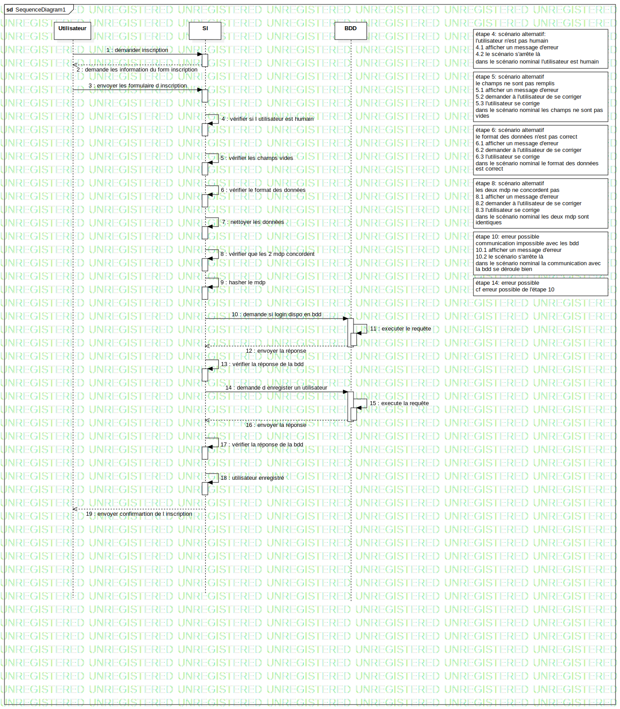

Interaction1
UMLInteraction
Untitled
::
Collaboration1
::
Interaction1
Description
none
Diagrams

SequenceDiagram1
Participants
Utilisateur
SI
BDD
Messages
demander inscription (Utilisateur→SI)
demande les information du form inscription (SI→Utilisateur)
envoyer les formulaire d inscription (Utilisateur→SI)
vérifier si l utilisateur est humain (SI→SI)
vérifier les champs vides (SI→SI)
vérifier le format des données (SI→SI)
nettoyer les données (SI→SI)
vérifier que les 2 mdp concordent (SI→SI)
hasher le mdp (SI→SI)
demande si login dispo en bdd (SI→BDD)
executer le requête (BDD→BDD)
envoyer la réponse (BDD→SI)
vérifier la réponse de la bdd (SI→SI)
demande d enregister un utilisateur (SI→BDD)
execute la requête (BDD→BDD)
envoyer la réponse (BDD→SI)
vérifier la réponse de la bdd (SI→SI)
utilisateur enregistré (SI→SI)
envoyer confirmartion de l inscription (SI→Utilisateur)
Properties
Name
Value
name
Interaction1
stereotype
null
visibility
public
isReentrant
true
Owned Elements
SequenceDiagram1